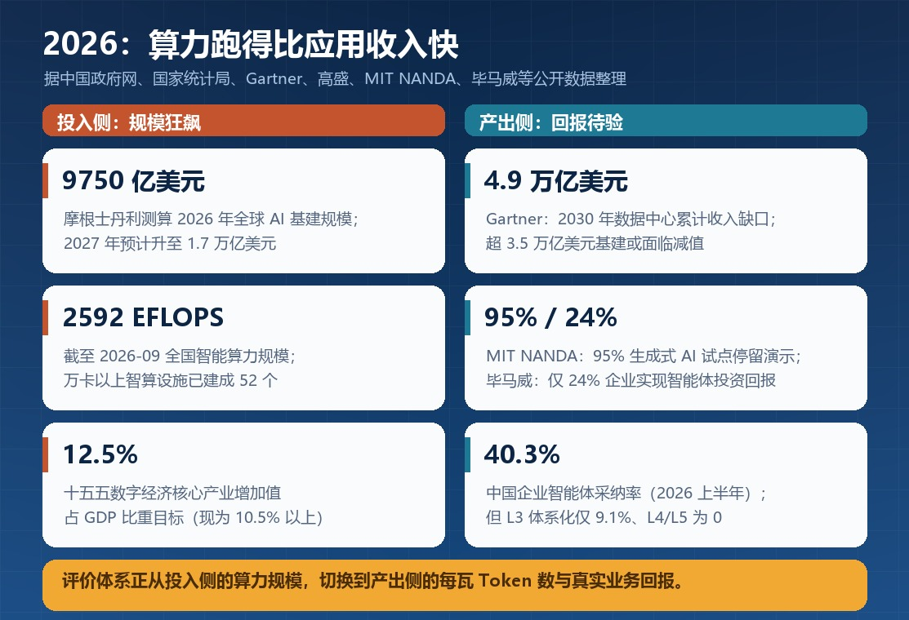

11 月 20 日，2026 世界计算大会在长沙开幕。会上披露，截至 2026 年 9 月，全国智能算力规模达到 2592 EFLOPS，万卡以上智算设施已建成 52 个。几乎在同一时间，另一组数字被反复引用：摩根士丹利测算 2026 年全球 AI 基建规模约 9750 亿美元，2027 年将升至 1.7 万亿美元；Gartner 预计，到 2030 年数据中心需要累计产生 8.5 万亿美元收入才能支撑现有投资，可归因收入只有 3.6 万亿美元，缺口 4.9 万亿美元。一边是算力以季度为单位翻倍，一边是应用收入还难以覆盖折旧。2026 年的 AI 与数字经济，已经进入算账阶段。
把这些读数放在一起，可以看到一个贯穿全年的反差：总量指标依然强势，产业渗透持续加快，但企业利润表上的变化远没有资本开支那么醒目。判断这一年，不能只看算力建了多少，还要看每一瓦电力、每一枚芯片最终带来了多少可核算的业务价值。

一、事实层面：投入端在加速，产出端在等账
投入端的数字是清晰的。国家统计局 10 月数据显示，信息传输、软件和信息技术服务业生产指数同比增长 9.2%，数字产品制造业增加值增长 18.4%，工业机器人产量增长 26.0%；1 至 10 月信息服务业投资同比增长 20.5%，远高于高技术产业投资整体 4.0% 的增速。算力侧，全国智能算力规模从 2024 年底的 725.3 EFLOPS 增至 2026 年 9 月的 2592 EFLOPS，一年半接近翻三倍，“8+10+3”算力枢纽格局成形，八大枢纽贡献全国八成以上智能算力。
企业侧的采用率同样在上升。中国企业智能体采纳率从 2024 年底的 17.3% 升至 2026 年中的 40.3%，年营收超 10 亿美元的企业达到 54%；2026 年上半年国内 AI 原生应用月活跃用户规模达 4.99 亿，同比增长 85.4%。金融、政务、制造、医疗等重点行业的渗透率分别约为 68%、61%、53%、40%，智能体正从客服、营销走向风控、巡检、辅助诊断等核心业务。
但产出端的账并不好看。MIT NANDA 调研显示，约 95% 的企业生成式 AI 试点停留在演示阶段，没有产生可量化的增收降本；毕马威《2026 全球技术报告》显示，88% 的企业已将智能体融入系统，只有 24% 实现投资回报；麦肯锡的统计中，仅约 6% 的组织成为“AI 高绩效企业”，即 AI 带来至少 5% 的 EBIT 增长。国内调研中，48.5% 的企业 AI 项目 ROI 低于预期，44.4% 无法明确核算 ROI。成熟度也不宜高估：L1 探索阶段占 67.3%、L2 局部应用占 24.0%、L3 体系化仅 9.1%，L4 与 L5 目前为 0。
数字化改造同样存在“覆盖率高、深度不足”的落差。全国规上工业企业数字化改造覆盖率已达九成，数字化生产设备普及率超六成；但中国社科院工业经济研究所的研究显示，77.4% 的制造企业开展了某种形式的数字化改造，只有不到 10% 实现业务集成、达到智能化运营水平，30% 以上仍停留在单点尝试。山东三季度数据中，规上工业企业转型覆盖率 95.1%，深度数字化转型率仅 47.8%。
二、分析：缺口从哪里来
第一重原因是会计口径。云厂商普遍按 5 至 6 年折旧服务器，而 AI 加速器的经济寿命存在争议：有测算按 3 年重算，认为 2026 至 2028 年折旧被低估约 1760 亿美元；也有机构指出，若改为 3 年，部分厂商每股收益将下降 17% 左右。2027 至 2028 年是折旧集中兑现的窗口，届时利润率与减值会成为最关键的观察点。对下游企业来说，同一笔投入在“三年回本”和“五年回本”两种假设下，结论可能完全相反。
第二重原因是单价与利用率的错位。H100 按需中位价约 3.81 美元/小时，一年上涨 21%；旧卡通过下沉到推理、微调与低价 API 层延续寿命。这说明风险更多落在毛利和单价上，而不是需求突然消失。真正被改变的指标是“每瓦 Token 数”和“每 Token 成本”——中兴通讯已明确把 Token 称为衡量 AI 经济性的关键指标。当评价口径从堆卡数量转向单位能耗产出，过去那种以采购规模论英雄的建设方式自然难以为继。
第三重原因是组织与数据。企业 AI 项目落地难的根因排序中，数据孤岛占 46%、缺乏数据人才占 42%、缺少清晰数据战略占 39%。智能体应用里，通用辅助类场景占 83.7%，专业纵深场景只占 16.3%。葡萄牙国务改革部长贡萨洛·马蒂亚斯在里斯本网络峰会上说得很直接：技术不会修复一个有问题的流程，只会加速它。先简化流程、再引入 AI，与先把 AI 塞进旧流程，结果往往不同。中小企业的问题则更具体：74% 的中小型制造企业把数字化与智能化人才缺口列为首要挑战，缺的不是程序员，而是能把业务需求翻译成技术语言的“技术翻译”。
第四重原因是产业链景气分层。上游硬件是 2026 年业绩兑现最充分的环节：中际旭创上半年营收 417.78 亿元、同比增长 182.49%，归母净利润 136.51 亿元、增长 241.70%；工业富联前三季度营收 9414.14 亿元、增长 55.88%，归母净利润 403.75 亿元、增长 79.55%。与此同时，12 家算力公司出现“增收不增利”，有新建数据中心因客户上架率不足转为阶段性亏损；部分头部云厂商自由现金流由正转负。上游赚钱、中游烧钱、下游还在验证，这是当前最真实的结构。
三、趋势判断：评价体系正从投入侧切换到产出侧
政策信号已经很明确。2026 年政府工作报告首次以独立段落提出“打造智能经济新形态”，要求推动重点行业领域人工智能商业化规模化应用；“十五五”规划纲要把数字经济核心产业增加值占 GDP 比重目标从 10.5% 提高到 12.5%，并部署超大规模智算集群、算电协同等新基建工程。三部门印发《智能体规范应用与创新发展实施意见》明确 19 个典型应用场景，7 项智能体互联国家标准发布。目标不是再建多少机房，而是到 2027 年新一代智能终端、智能体应用普及率超 70%，到 2030 年超 90%。
中国的路径也更偏向效率对冲成本。国产芯片受显存带宽限制，单卡效率仍有差距，910B 开箱训练效率约为 H200 的十五分之一，但通过长程任务动态并行可把训练速度提升 4 倍；国产超节点正从 384 卡向万卡级演进。成本侧，“60% 端侧、30% 端云一体、10% 云端”的架构被提出，综合成本比业界高性价比方案低约 50%；英国金融技术公司 Revolut 部署智谱 GLM 开源模型后，编程模型使用成本下降约 90%。2026 年一季度国内算力租赁市场规模 680 亿元、同比增长 62%，同期 AI 算力需求增长 417% 而供给增速为 128%——缺口驱动租赁，效率对冲成本，这与单纯堆资本的路径并不相同。
中小企业数字化转型也会从“大而全”转向“小快轻准”。2026 年中国数字化转型支出约 4.2 万亿元，中小企业支出增速 18.5%，快于大型企业的 9.7%；但 49.76% 的中小企业投入不足 10 万元，超过九成企业期望单项目成本不超过 5 万元。工信部发布《“小快轻准”数字化产品和服务培育指引（2026 年版）》，三批城市试点已支持超 4 万家中小企业。可参照的样本是山东邹平一家小型纺织企业：投入 78 万元上线设备状态采集与能耗监测系统，一季度内故障预警准确率 92%、非计划停机时长下降 28%、单位产品能耗下降 4.3%，预计 18 个月收回投入。这类车间级效益，正是“算账逻辑”能否成立的基准参数。
对粤港澳大湾区而言，机会在于场景密度。这里具备连续的制造业链条、密集的工业门类和大量可直接验证的流程节点，智能工厂、AI 视觉质检、能耗优化等场景都能把模型能力折算成良品率、停机时间和单位能耗。下一阶段的竞争力，不取决于谁采购了更多卡，而取决于谁能把算力转成工业知识、把 Token 转成可审计的成本下降与收入增量。
结语
“数字经济规模持续扩大”和“多数 AI 试点尚未兑现回报”可以同时为真，前者反映投资与渗透的广度，后者反映价值实现的深度。把其中任何一个单独拿出来下结论，都会误判这一年。更值得关注的信号是，政策文件和企业预算正在同时转向：从有没有 AI，转向每瓦 Token 产出多少、多少改进最终进入利润表。炒作退潮之后，真正留下来的，会是那些能把技术写进流程、把回报算到车间的组织。资本可以提前定价，但账终究要由经营来兑现。
本文所引数据来自公开报道、机构研究与上市公司公开财报，不同机构对“渗透率”“数字经济规模”等口径定义不一，跨机构数值不宜直接比较；相关判断仅供研究参考，不构成投资建议。